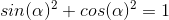
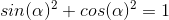

The pythagorean theorum states that, on a right triangle, a side squared plus the other side squared will equal the hypotonuse squared. When applied to sin and cos on a unit circle it means that

The pythagorean theorum states that, on a right triangle, a side squared plus the other side squared will equal the hypotonuse squared. When applied to sin and cos on a unit circle it means that

By rearranging this formula you can derive two more pythagorean identities.